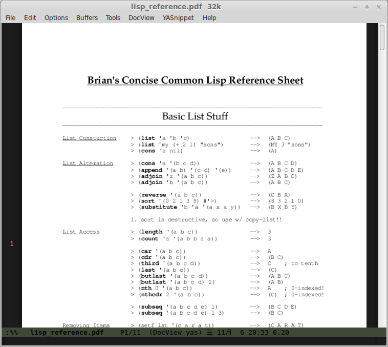

丧心病狂:用Emacs阅读PDF文档
DocViewMode
Emacs有个插件叫做DocViewMode， 为Emacs提供了对PDF、PS等格式文件的支持，其原理是将这些文件转换成png格式的图片，并在Emacs中显示。
安装
从Emacs 23开始，默认就安装了DocViewMode，不过为了能够正常工作，还需要在系统中安装这两个东西：
- xpdf
- ghostscript
安装好后，像打开常规文件那样打开PDF文件就行了。
感受
怎么说呢……打开小的PDF文件还可以,比如说这个：

操作也简单，+/- 进行缩放，n/p进行翻页。
然后我丧心病狂地按了C-x C-f后输入了：
~/Dropbox/book/lisp/ANSI_Common_Lisp.pdf
然后就悲剧了……
所以说某篇文章说的把Emacs设置成默认PDF阅读器这种事还是不要做的好。